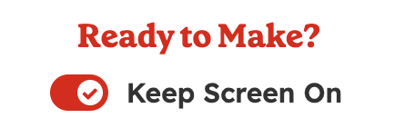
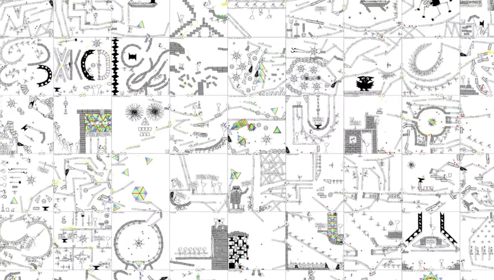

Bleeding Edge Web
@edgeATX
edgeATX.org
May 2024
News From the Bleeding Edge
— Brian Moeskau (@bmoeskau)
Thinking About Your Code: Push vs Pull
— Ben Lesh (@benlesh)
Housekeeping
- Join us on Slack
- Speakers and sponsors always wanted
Thanks to Our Host!
Thanks to Our Sponsor!
Libraries & Frameworks
React 19 Beta
Released April 25
- Server Components
- Actions / Server Actions
useOptimistic/useActionState/useFormStatususeAPI- and more...
SolidStart 1.0
Released May 21
Fine-grained reactivity goes fullstack
- "Composable meta-framework" built on SolidJS
- Performant and React-like (reactive, no v-DOM)
- Includes many primitives
- Bundles serializer, bundler, runtime, router, etc.
Other notable releases
- April 30 Svelte 5 RC
- May 8 Nx 19.0
- May 18 Brainchop 4.0
- May 22 Angular 18 (and angular.dev)
- May 23 Next.js 15 RC (React 19 support)
Baseline News
What is Baseline?
Web platform features that are ready to use in your projects today.
How do features become Baseline?
- Newly available: supported by all core browsers *
- Widely available: 30 months since interoperable date
* Chrome / Firefox (desktop + Android), Safari (macOS + iOS), Edge
Intl.Segmenter
Baseline Available as of April 16
Locale-sensitive text segmentation to split a string into words, sentences, or graphemes.
const segmenter = new Intl.Segmenter('en', { granularity: 'word' });
const segments = segmenter.segment('This has four words!');
Array.from(segments).map((segment) => segment.segment);
// ['This', ' ', 'has', ' ', 'four', ' ', 'words', '!']
Intl.Segmenter
Baseline Available as of April 16
Handy for parsing other locales easily:
const segmenter = new Intl.Segmenter('ja', { granularity: 'word' });
const segments = segmenter.segment('これは日本語のテキストです');
Array.from(segments).map((segment) => segment.segment);
// ['これ', 'は', '日本語', 'の', 'テキスト', 'です']
CSS light-dark()
Baseline Available as of May 13
Previously, only built-in system
colors could react to color-scheme changes:
:root {
color-scheme: dark;
}
body {
background-color: Canvas;
}
a {
color: LinkText;
}
CSS light-dark()
Baseline Available as of May 13
Now custom classes can also react to color-scheme (simplifies the prefers-color-dark approach):
:root {
color-scheme: light dark;
--primary-color: light-dark(#333, #fafafa);
--primary-background: light-dark(#e4e4e4, #121212);
--highlight-color: light-dark(hotpink, lime);
}
Screen Wake Lock API
Baseline Available as of May 14
Control a device's screen wake behavior, ensuring uninterrupted interactions with web applications.
Use cases:
- Prevents dimming in web-based slideshows
- Keeps screen on while following a
baking recipe

Screen Wake Lock API
Baseline Available as of May 14
let wakeLock = null;
const requestWakeLock = async () => {
try {
wakeLock = await navigator.wakeLock.request();
wakeLock.addEventListener('release', () => {
// do something after released
});
}
};
await requestWakeLock();
// release it some time later:
wakeLock.release();
CSS stepped value functions
Baseline Available as of May 14
Transform a given value according to another step value.
// rounding:
font-size: round(nearest, var(--my-font-size), 1rem);
opacity: round(.56, 0.1); /* 0.6 */
// remainder:
margin: rem(18px, 5px); /* 3px */
Web Platform Dashboard
Announced May 14
See the entire web platform mapped as a set of features, along with their support in browsers.
In Case You
Missed It
Bugzilla #33654
TEXTAREA incorrectly applying ROWS= and COLS= (horizontal / vertical scrollbar extra space, with overlay scrollbars disabled)
Deep Dive: xkcd's "Machine"
Published May 8
- xkcd released Machine April 5th
- An infinite, user-defined Rube Goldberg machine
- Haskell, React and Rapier (entirely in the DOM!)
- It's also open source 
Last But
Not Least
Doom Scroll
- Abuses the experimental
scroll-timeline - Play DOOM Scroll
Thanks!
Brian Moeskau